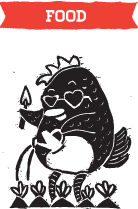
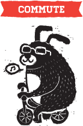
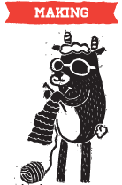

|  |  |  |  |
Mindfulness is to be aware at all times. Consumption in this case, means things that you buy/spend money on — food, shopping, services etc. So being mindful about your consumption means being constantly aware that your decisions on what you spend your money on has an impact on your community, the society, and the planet. When you buy something, you are taking a vote on how you want your world to become.
So before buying that cheap mass-produced top from that boring old international clothing retailer, think about where it is made, whether they pollute the ocean with toxic chemicals, whether sweatshop workers were exploited, etc. And this also means as a consumer, you should try your best to be educated about these social and environmental issues.
A lot of us have this habit of shopping as a pastime, but do not realise how unhealthy this is. Marketing messages are being forced down our throat every single day such that we no longer can tell what a normal healthy lifestyle should be inside this crazy consumerist society we live in.
Once we start being mindful about what we consume, we have the power with our dollars to vote for a vibrant local economy, a world free of unhealthy materialistic obsessions, and a more sustainable planet. This may sound idealistic, but as Dr. Seuss once said in The Lorax, "Unless someone like you cares a whole awful lot, nothing is going to get better. It’s not."
- Shop local produce/locally made products instead of imported goods.
- Buy secondhand from thrift shops and online listings. Old/vintage items are usually made with better quality and will last forever.
- Whenever possible, choose handmade and support local makers. Handcrafted goods are more unique and you know they're made with care.
- Choose eco-friendly goods made from recyclable/repurposed materials to minimize impact on the environment.
- Here are some mindful shopping techniques from Mindful Momma.
- Before buying anything, think, 'do I really really need this?'

- Why it pays big to support small businesses | Care2 Causes
- Invest in people, not corporations | Of Cats and Crafts
- The Story of Stuff | Annie Leornard [video]
- Mindful spending | Scoutie Girl
- There are no ethical electronics, so buy less stuff | GOOD
- From mindless spending to mindful consumption [video]
- Use up, wear out, make do: Buy less in 2012 | GOOD
- Why we can't spend out way back to normal | TIME
- The 100 Percent off store | Care2 Causes